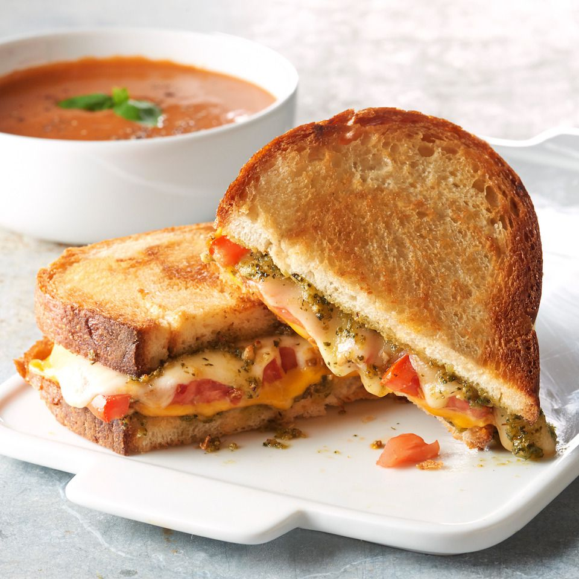

Pesto Grilled Cheese Sandwich

Description
I first had this pesto grilled cheese sandwich at a small restaurant and immediately went home to duplicate the recipe. I've been making my grilled cheese sandwiches this way ever since!
Ingredients
- 2 Tablespoon of unsalted butter.
- 4 slices Italian bread.
- Two table spoons of homemade or store bought green pesto.
- 2 slices of tomato.
- 4 slices of preffered cheese.
Steps..
- Spread butter on one side of a slice of bread and place it, buttered side down, into a nonstick skillet over medium heat.
- Spread 1/2 of the pesto sauce on the unbuttered side of the bread. Stack one slice of cheese, tomato, and a second slice of cheese on top of pesto, in that order.
- Flip 2 pieces of the bread over and spread 1/2 tablespoon pesto onto each.
- Spread remaining pesto sauce on second slice of bread. Place it pesto side down onto sandwich in the pan. Butter the top side of bread.
- Gently fry sandwich, flipping once, until both sides are golden brown and cheese has melted, about 5 minutes per side.